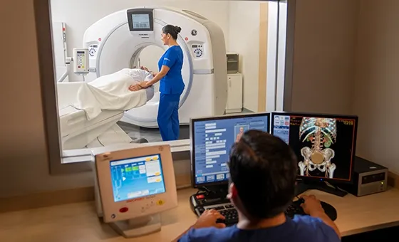
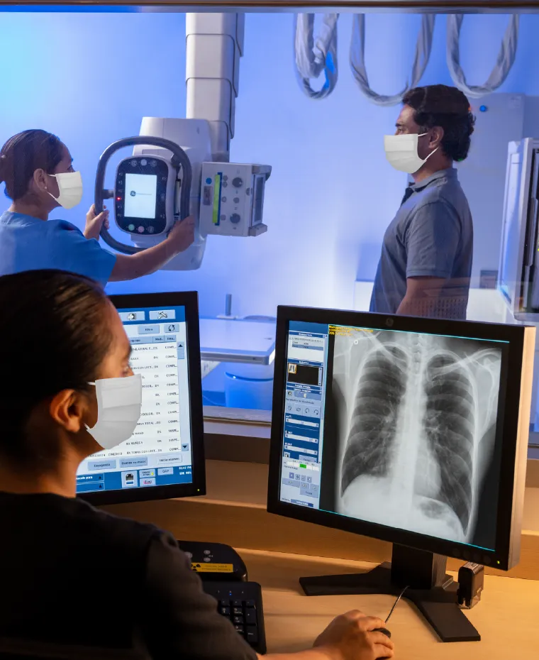

En el Centro de Diagnóstico por Imágenes (CDI) realizamos estudios de tomografía, resonancia magnética y diversos procedimientos de radiología vascular e intervencionista. Si cuentas con una orden médica externa o emitida por otra institución de salud, completa tus datos y nuestro equipo se comunicará contigo para orientarte y programar tu atención.
Regístrate aquí
Nuestro equipo médico está conformado por médicos radiólogos y especialistas clínicos subespecializados en cada área de las imágenes diagnósticas.
Equipos de última generación que garantizan imágenes más precisas y diagnósticos más confiables, respaldados por nuestra experiencia como pioneros en múltiples servicios de imágenes en el país.
Accede a tus resultados en un máximo de 48 horas, de forma digital y segura. Conservamos tu historial de estudios por imágenes para una mejor precisión diagnóstica y comparaciones futuras.
Resonancias magnéticas, tomografía, ecografías, mamografías (3D–tomosíntesis y contrastada), densitometría corporal, rayos X convencionales y contrastados, todos los tipos de biopsias mamarias, biopsias prostáticas por fusión de imágenes, y los procedimientos vasculares e intervencionistas realizados bajo los más altos estándares de calidad.
Genera imágenes muy precisas con un campo magnético y ondas de radio. Permite ver cerebro, médula, articulaciones y posibles tumores. Es importante informar si tiene implantes metálicos o marcapasos.
Combina múltiples rayos X desde distintos ángulos para obtener imágenes detalladas del cuerpo. Es rápida y útil para emergencias, para evaluar huesos, órganos internos y vasos sanguíneos. Puede requerir contraste e implica una baja exposición a radiación.
Extrae una pequeña muestra de tejido de una zona sospechosa, guiada por eco o mamografía. El análisis microscópico permite un diagnóstico exacto para confirmar o descartar cáncer. Se realiza bajo anestesia local.
Procedimientos poco invasivos guiados por imagen y realizados por un radiólogo. Contamos con biopsias prostáticas por fusión, intervencionismo no vascular (biopsias, drenajes, etc), e intervencionismo vascular (embolizaciones, angiografías, escleroterapia, etc).
Analiza la densidad ósea para detectar osteoporosis y riesgo de fracturas; además, evalúa la composición corporal (músculo y grasa). Es un examen rápido, sin dolor y con baja radiación para controlar tu salud ósea.
Es una radiografía especializada que permite detectar cáncer de mama. Requiere realizar una breve compresión de la mama y utiliza muy poca radiación. Es el método más efectivo para identificar lesiones pequeñas.
Es un estudio que produce imágenes con ondas de sonido en tiempo real. No usa radiación y es apta en el embarazo. Se usa para evaluar abdomen, tiroides, mamas y el flujo sanguíneo (Doppler).

Para agendar tus exámenes de imágenes con una orden interna comunícate al número (01) 6196100, opción 2 e inmediatamente opción 3, o acércate a un módulo de atención en imágenes.
Recuerda que para reservar tu cita se debe contar con una orden médica.
Si tienes que realizarte exámenes de Rayos X sin contraste, puedes agendar el examen directamente desde nuestra plataforma de agendamiento. Considera que este servicio está disponible en las sedes San Borja, Lima y Surco.
Realizamos resonancias magnéticas, tomografías, ecografías, mamografías (3D–tomosíntesis), densitometría corporal, rayos X convencionales y contrastados, biopsias mamarias y prostáticas, y procedimientos vasculares e intervencionistas.
Contamos con el servicio de imágenes en nuestras sedes de San Borja, Lima, San Isidro, La Molina y Surco. Algunos estudios especializados están disponibles solo en sedes específicas.
Se requiere orden médica vigente para la mayoría de estudios. Atendemos todos los seguros de salud. Los resultados se entregan en un máximo de 48 horas de forma digital.